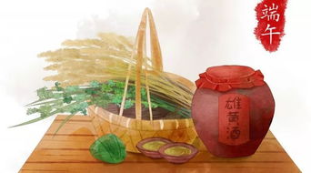

端午习俗
◆端午节的礼俗、食俗。
◆避恶去毒。古人认为五月是个“恶月”，“阴阳争，血气散”，汉人应劭的《风俗通义》甚至有“俗说五月 五日生 子，男害父，女害母”的记载。因此自古便有端午避恶去毒的礼俗。《夏小正》提倡“蓄采仙药”，《后汉 书》主 张“朱索五色柳桃印为门户饰，以止恶气”，《荆楚岁时记》也肯定“采艾以为人，悬门户上，以禳毒气” 的作 法。因此，后世端午节由许多习俗与食俗(诸如挂钟馗像，贴午时符，采集蟾酥和草药，悬挂菖蒲、艾草、 石榴  花、大蒜头和龙船花。祛除蝎子、毒蛇、壁虎、蛤蟆与蜈蚣等五毒;饮用雄黄酒、朱砂酒和菖蒲酒，小儿涂雄黄、 佩香袋、挂药包与系五彩丝，赐扇，沐格兰汤;熙游避灾，露天饮宴;赛龙舟;比武;吃咸蛋和粽子，喝龟肉 汤等)，无不出自避兵鬼、驱魔疠、止病瘟、强身体之目的。从这个意义上讲，端午节应当是个防御疾病、卫生保 健的节日。 为了使之更有情趣，它在传承过程中还融进了祝福、纳吉、游戏、踏青、竞技、美食等内容，显得 文采焕灿， 英华纷 披。 更有意味的是，端午节的许多宴席均用药物或避邪的名称命名，如《东京梦华录》记 载的“艾人宴”，《武林 旧事》记载的《禳会宴》，《胜饮篇》记载的“菖蒲宴”，《岁时广记》记载的“解粽宴” 等，这都可作为“端午 辟恶”的佐证。 端午节各地有不同的风俗，较流行的有龙舟竞渡，也叫赛龙船，传说是 为了拯救落江的屈原。其它的活动还有 插艾、贴符、挂图等。
◆端午节是集祈福消灾、欢庆娱乐和饮食为一体的民俗大节，过端午节，是中华民族自古以来的传统习惯。端午节 在传承发展中杂揉了多地多种民俗为一体，节俗内容丰富，因地域不同而又存在着习俗内容或细节上的差异。扒 龙舟（隐寓苍龙）与食粽（隐寓主星心宿二）是端午节的两大礼俗主题，这两大传统礼俗主题在中国自古传承， 至今不辍。传统的节日仪式与相关习俗活动，是节日元素的重要内容，承载着丰富多彩的节日文化内涵。
◆端午习俗活动围绕敬龙酬龙、祈福纳祥、压邪攘灾等形式展开，内容丰富多彩，热闹喜庆，带有浓郁的各地域 特色。具体习俗活动主要有：扒龙舟、挂艾草与菖蒲、聚午宴、洗草药水、放纸鸢、荡秋千、贴“午时符”、系百 索子、打午时水、浸龙舟水、放纸龙、点艾条、薰苍术、赠香扇、晒百日姜、挂黄葛藤、画额、佩香囊、佩长命 缕、拴五色线、食粽、采药制茶、立蛋、佩豆娘、贴五毒图、游旱龙、划喜船、九狮拜象、抢青、马拉溜、挂钟 馗像、品花宴等等。
◆端阳（端午节），一向被看作是一年中的主要节日之一。周处《风土记》说：“仲夏端午，谓五月五日也，
俗重此日也与夏至同。” 旧日盛行于端午节的“十二红”，至今尚被称为扬州时令菜肴，所传之“十二红“，并
 无定品，惟有粗细之分，视各家财力和社会地位而定，亦有通品，例如“炒红苋菜”，“炝女儿红”(洋花萝卜)，
红烧黄鱼，切咸鸭蛋之类，这已几乎是大家小户，皆列为端阳中餐的常品。中国人一直喜欢红色，喜庆吉利，
有节日的气氛。至于端午的菜品，为何一定要十二红，而不是十一红，或是十三红。这是有说法的，这个数字
代表每年的十二个月，再者它也兼顾了每年的四时八节。人们都希望日子过得红红火火的，事业发展得顺顺当
当的，凡事年年吉利，月月喜庆。
无定品，惟有粗细之分，视各家财力和社会地位而定，亦有通品，例如“炒红苋菜”，“炝女儿红”(洋花萝卜)，
红烧黄鱼，切咸鸭蛋之类，这已几乎是大家小户，皆列为端阳中餐的常品。中国人一直喜欢红色，喜庆吉利，
有节日的气氛。至于端午的菜品，为何一定要十二红，而不是十一红，或是十三红。这是有说法的，这个数字
代表每年的十二个月，再者它也兼顾了每年的四时八节。人们都希望日子过得红红火火的，事业发展得顺顺当
当的，凡事年年吉利，月月喜庆。
◆节庆食品诸如粽子、五黄、艾草糕、艾糍、打糕、煎堆、茶蛋、五毒饼、菖蒲酒、雄黄酒、午时茶等等。